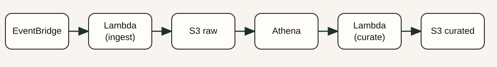
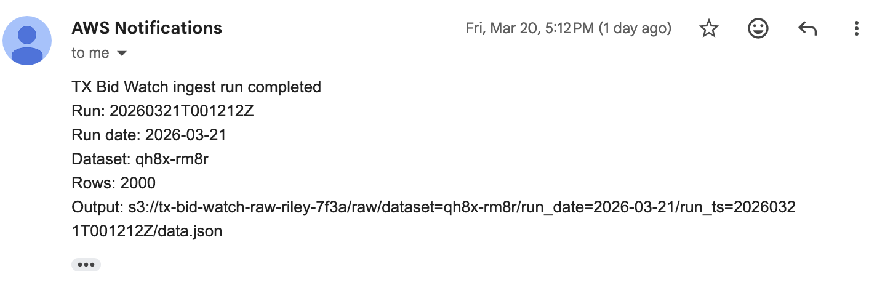
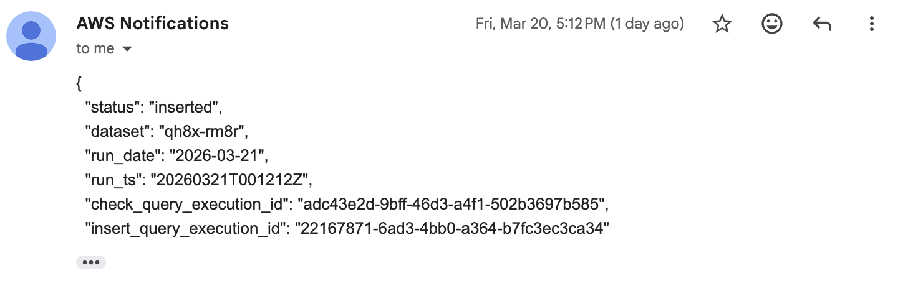
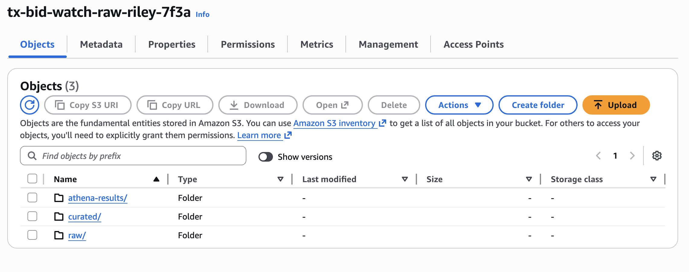
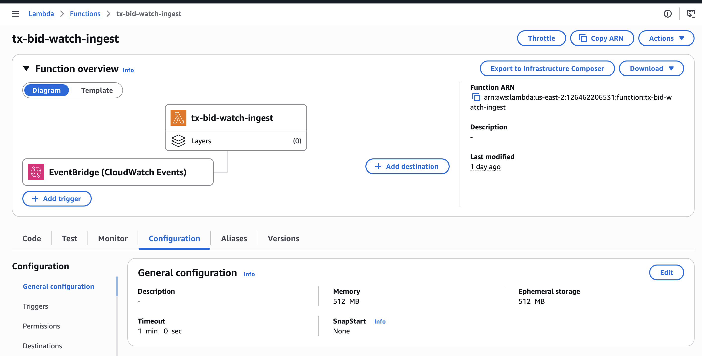
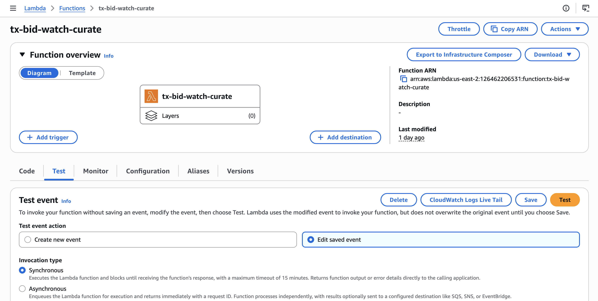
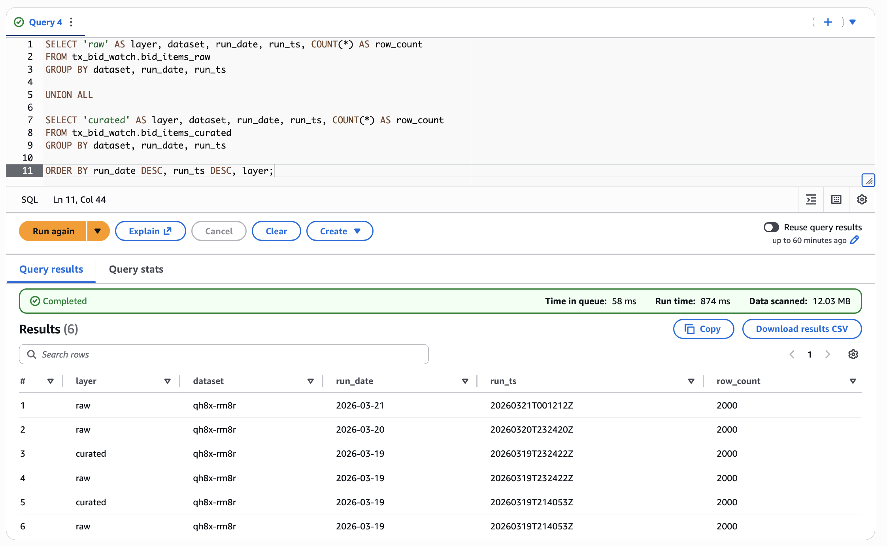
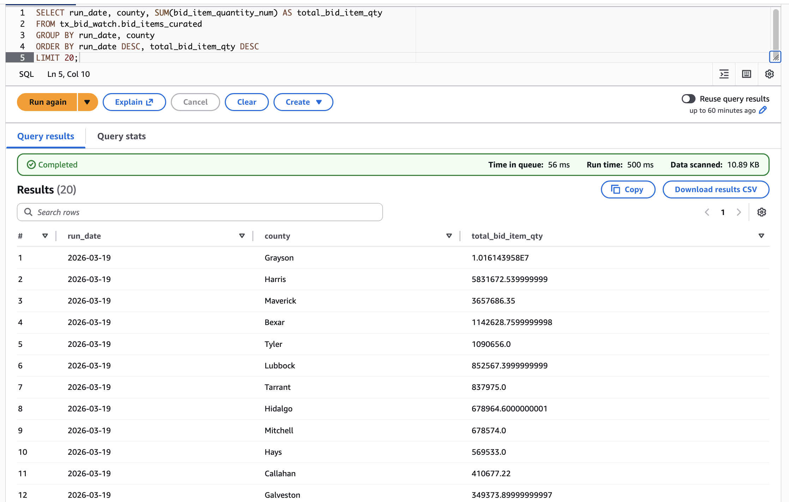

This project is an end-to-end serverless data pipeline built on AWS that ingests public procurement data from the Texas Open Data portal, stores versioned raw data in S3, and transforms it into an analytics-ready format using Athena and Parquet.
The pipeline runs automatically on a schedule, processes new data incrementally, and is fully managed using Terraform. It demonstrates how to design and deploy a modern cloud-based data engineering workflow from ingestion to transformation.

Public procurement data is available through open data portals, but it is not structured for easy analysis or monitoring over time. Raw data is often updated frequently, lacks versioning, and requires manual effort to track changes or analyze trends.
The goal of this project was to build a scalable system that automatically collects, stores, and organizes this data in a way that supports querying, validation, and future analytics.
I built a serverless data pipeline using AWS services and Python to automate the full data flow:





All infrastructure was defined and deployed using Terraform, making the system reproducible and scalable.
The final system runs automatically each day and produces a fully queryable dataset with both raw and curated layers. Each run generates a new snapshot of procurement data, which can be inspected or analyzed using SQL.


This project demonstrates key data engineering concepts including data lake design, partitioned storage, schema-on-read querying, serverless orchestration, and infrastructure as code.
Through this project, I gained hands-on experience with AWS services such as Lambda, S3, Athena, Glue, EventBridge, and CloudWatch, as well as real-world challenges like API pagination, data type inconsistencies, and incremental pipeline design.